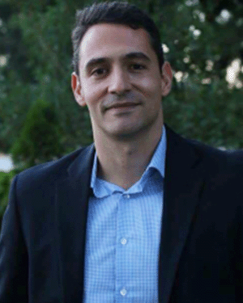

Invited Speakers

Kostas Alexis
Professor
Professor
Department of Engineering Cybernetics
Norwegian University of Science and Technology
Fei Gao
Tenured Associate Professor
Tenured Associate Professor
Department of Control Science and Engineering
Zhejiang University
Guillaume Sartoretti
Assistant Professor
Assistant Professor
Department of Mechanical Engineering
National University of Singapore
Workshop Program (GMT+4)
Opening and welcome
TBD
Abstract: TBD
Autonomous Multi-modal Ship Ballast Tank Inspection
Abstract:
This talk focuses on technologies that enable the autonomous
inspection of ship ballast tanks without assuming access to any
information a priori. Critically, the presented results exploit a real-time
inferred semantic understanding of the environment which allows the onboard autonomy
to reason about the structures within ballast tanks and predict their geometric configuration
thus greatly reducing the time necessary for inspection. Extensive results will be presented
from real-life deployments of aerial robots in ballast water tanks.
TBD
Abstract: TBD
Coffee break and Poster Session
TBD
Abstract: TBD
Active Perception and Mobile Manipulation with Autonomous UAVs
Abstract: In recent years, unmanned aerial vehicles (UAVs)
have garnered significant attention due to their high flexibility and mobility.
This talk will present research on UAVs in the areas of active perception and mobile manipulation,
with applications in inspection and logistics. First, we will introduce methods for autonomous drones
to efficiently explore unknown environments, including advancements in real-time planning,
efficient environmental representation, and swarm collaboration. Next, we will discuss
the challenges of coverage and reconstruction in complex 3D scenes,
presenting prediction-enhanced real-time coverage planning methods and
heterogeneous drone collaboration strategies. Finally, we will explore
recent advancements in UAV-based transportation, delivery, and manipulation.
TBD
Abstract: TBD
TBD
Abstract: TBD